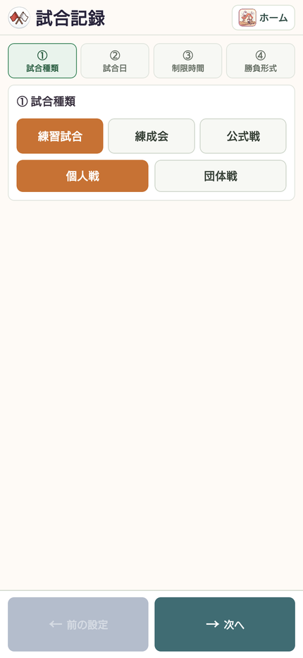

05 / 記録する
個人戦を作る
最初に試合の条件をそろえると、後の検索や集計が楽になります。
操作の入口ホーム → 新しい試合
種別と個人戦を選ぶ
公式戦・練習試合・練成会など、目的に合う種別を選び、形式を「個人戦」にします。
日付・大会・会場を入力する
同じ大会を分担して記録するときは、大会名と日付をそろえておくと取りまとめやすくなります。
時間とモードを決める
制限時間と「通常／流し」を設定します。一本でタイマーを止めたいときは通常モードを使います。
勝敗形式と対戦者を設定する
一本勝負・三本勝負などを設定し、赤・白の選手を選びます。氏名と所属を確認してスコア入力へ進みます。

